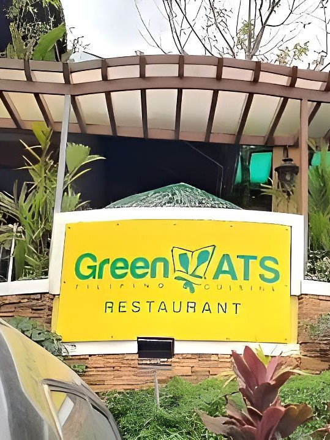

Asisan, Tagaytay City

350 meters from Bag of Beans (Main Branch)
Enjoy Filipino dishes and a friendly atmosphere at Green Ats Restaurant. This eatery offers a cozy and welcoming setting.
Green ATS Restaurant
Asisan, Tagaytay City
350 meters from Bag of Beans (Main Branch)